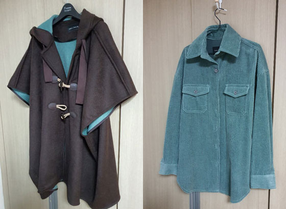
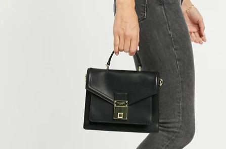
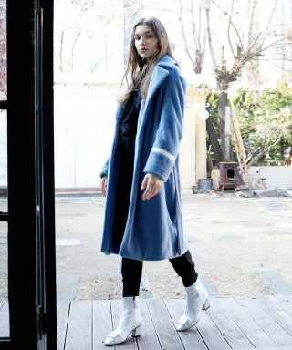
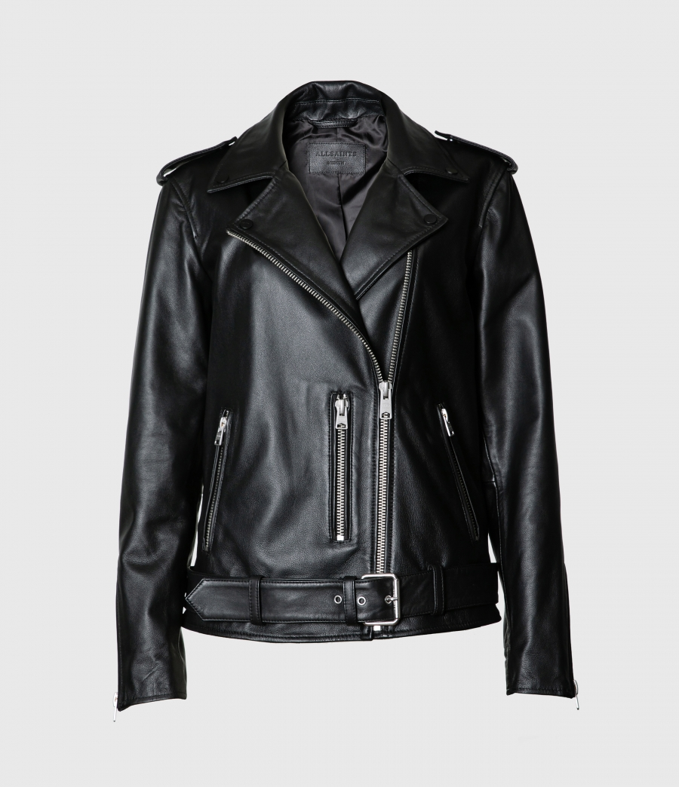
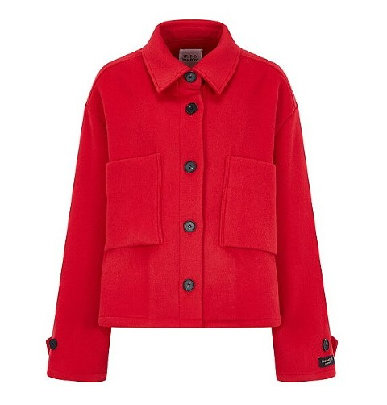

충동구매, 지름신 강림, 대폭주......토요일, 일요일 이틀동안 지른것들입니당;;;;
피어싱을 새로 한건 뭔가 누르지 말라야 할 버튼을 누른것 같습니다;;
피어싱 사고싶어요;;;;
우선 링타입 두개 주문해봤습니당
집콕 생활이 너무 갑갑하여 롯데월드몰 놀러갔다가 준바이준케이 세일을 발견;;
관심있어서 한벌쯤 구매해보고 싶었는데 잘되었다 싶어서 홀린듯 들어갔습니다;
그리고 포기를 못하고 또다시 판초스타일 아우터를 구매해봄

안감 민트 색이 예쁘네용
엄청난 오버핏인데 웨 난 이 판초스타일을 포기를 못하는가;
여튼 날 따닷해지길 기다리면서 옷장행 1
+ 안에 가디건 처럼 입을 민트 셔츠 하나

그리고 집에와서 테드베이커 가방 충동구매 ㅡㅡ;;
미니 사첼백 스타일. 네모네모 가방만 보면 정신줄을 놓습니당;;;
이러다보니 슬슬(?) 브레이크가 풀려
걍 요거 마음에 든다~싶었던 리스트를 하나씩 해치우기 시작하는데;;
우선 매장에서 입어보고 맘에들었지만 퍼 코트가 넘 많아서 구매안한 준바이준케이 파랑이 에코퍼 코트를 W컨셉에서 주문했고;;

올세인츠 예전에 발펀바이커 구매했다가 길이가 생각보다 짧고 너무 딱 맞는 사이즈를 구매해서 결국 벼룩행이 되었는데
포기를 못하고;; 좀더 긴 사이즈의 다위 바이커를 구매;;;;

오버핏으로 잘 어울렸음 좋겠어요;; 가장 기본 아이템 잘맞는거 구매하기 왜이리 어려운가;;;
그리고 일어나서 백화점 배회하다 충동구매한 톰보이 숏코트

엄청난 오버핏인데 편할거같아서 충동구매했습니다;;;
그리고 이것도 날 따수워질때까지 옷장행 2.....;;;
항상 말하지만 난 아우터보다 안에 입을 옷이 없는데
맨날 아우터만사;;;; 아우터만 겁나 많아;;;;;;
10월 11월 요즘 사고싶은게 없네 미니멀하게 살아보네 어쩌구했던 나님을 비웃으며 쇼핑종료 하겠습니다 ㅋㅋㅋ
진짜 고만사야지;;; 오랜만이야 이렇게 마구 질러대는 상황;;;;
알게모르게 나가서 놀고싶다는 욕구가 조금씩 쌓이는거 같아요 ㅡㅡ;
언능 날이라도 좀 따듯해서 밖에 걸어다니기 좋은 날씨가 되었음 합니다 ㅜㅜ